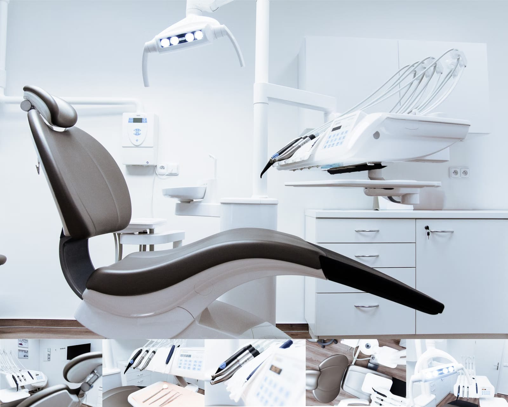
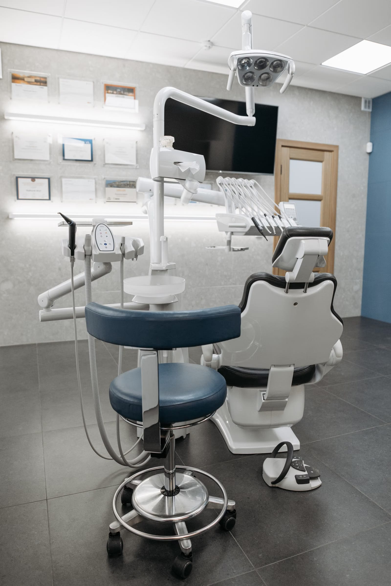

Halkalı Merkez'de, akşam 22:00'ye kadar açık bir diş polikliniği.
İş çıkışı, okul sonrası ya da cumartesi; size uyan saatte randevu verelim. Muayeneden sonra durumunuzu ve seçenekleri açıkça anlatır, tedavi planını birlikte yaparız.


01
Tedaviler, sade bir dille
- Diş taşı temizliği
- Dişlerin üzerinde biriken sert tabakanın ve plakların temizlenmesi. Diş eti sağlığı için düzenli yapılması önerilir.
- Dolgu
- Çürüyen kısmın temizlenip dişin, rengine yakın bir malzemeyle onarılması.
- Kanal tedavisi
- Dişin içindeki iltihaplı dokunun temizlenip kanalların doldurulması; dişi çekmeden korumayı amaçlar.
- Kaplama
- Fazla madde kaybı olan ya da rengi bozulan dişin üzerinin bir kaplamayla kapatılması.
- Muayene
- Ağız içi muayene ve gerekirse röntgen; her tedavinin ilk adımı.
- Protez
- Eksik dişlerin yerine sabit ya da hareketli protezle tamamlanması.
D
D
K
K
M
P
02
Kliniğe ilk geldiğinizde
- TanışmaŞikâyetinizi, geçmiş tedavilerinizi ve varsa kullandığınız ilaçları konuşuruz.
- MuayeneAğız içi muayene yapılır, gerekirse röntgen çekilir.
- SeçeneklerDurumunuzu ve tedavi seçeneklerini anlatırız; sorularınızı yanıtlarız.
- PlanTedavinin adımlarını ve randevu günlerini birlikte belirleriz.
Gelmeden önce arayın
Randevu saatinizi önceden belirlersek beklemeden muayeneye alınırsınız. Telefon ve WhatsApp: 0534 549 06 86.